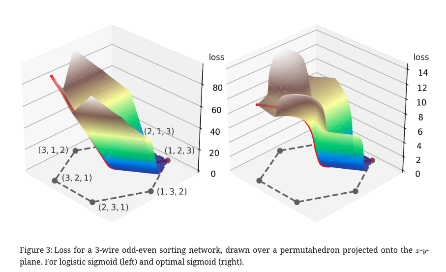
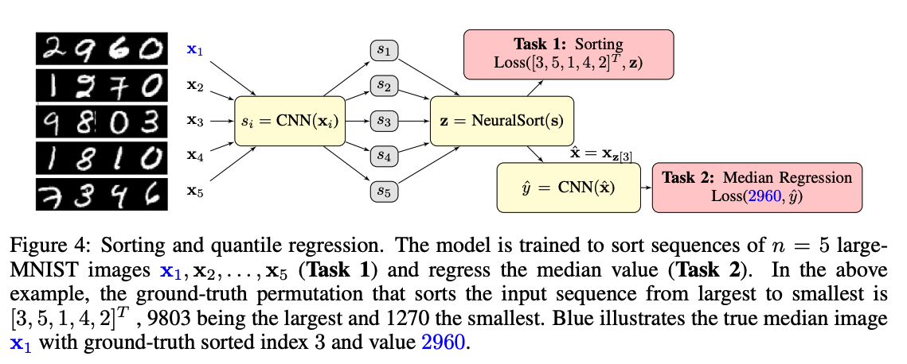

https://openreview.net/forum?id=IcUWShptD7d
著者
Felix Petersen (University of Konstanz)
Christian Borgelt (University of Salzburg)
Hilde Kuehne (University of Frankfurt, MIT-IBM Watson AI)
Oliver Deussen (University of Konstanz)
Differentiable Sorting Networks (ICML’21) の著者らによる改良版
学習において関数の単調性が重要 (ちょっと疑問、論文中でも軽く議論されているだけ)
Differentiable Sorting Networksで導入したmin, maxをrelaxedしたものが単調になるように関数を設計すると精度がよくなる
「min, maxをrelaxedしたものが単調になる」の定義をする
それを達成する関数の条件を見る
また緩和したmin, maxと真のmin, maxの誤差をバウンドするための条件も見る
Definition 1 (Sigmoid Function)
sigmoid(つまりS字の)関数を連続単調非減少で入力=0.5あたりで対称になる関数 \(f\) として定義する。
Definition 2 (Continuous Conditional Swaps)
sigmoid関数 \(f\) についてのcontinuous conditional swapを次のように定義する
Definition 4 (Monotonic Continuous Conditional Swaps)
\(\text{min}_f (x, 0) \ge 0, ~~ \forall x\) が成り立つとき、 \(f\) がmonotonic conditional swapを生成するという。
Theorem 5 (Monotonicity of Continuous Conditional Swaps)
\(f\) が 非減少monotonic conditional swapを生成するには、導関数が \(1/x^2\) より早く減退しない必要。つまり、
Definition 7 (Error-Bounded Continuous Conditional Swaps).
Continuous conditional swapsは \(\sup_x \min_{f} (x, 0) = c\) が有限である場合に限り、bounded errorを持つ。またその Continuous conditional swapsを \(c\) の error boundedを持つという。
Theorem 8 (Error-Bounds of Continuous Conditional Swaps)
もし式 (1) が成り立つならばContinuous conditional swapsはbounded errorを持つ。
さらに単調である場合、誤差の境界は \(\lim_{x \rightarrow \infty} \min_f (x, 0)\) として求められ、さらに式 (1) が成り立つ場合にのみエラーがboundされる。
Differentiable Sorting Networks で提案された logistic sigmoid \(\sigma(x) := 1 / (1 + \exp(-\beta x))\) は error boundはあるが、monotonic conditional swapにはならない。 (Fig.2の青線)
ここではerror boundがあってmonotonic conditional swapとなる \(f\) を3つ見ていく。
Reciprocal Sigmoid Function
\(f\) が error boundを持つ非減少monotonic conditional swapを生成するには、Theorem 5と8より \(f'(x) \in \Theta \left(1/x^2 \right)\) となる必要があるので、\(f_{\mathcal{R}}' (x) = \cfrac{1}{(2|x| + 1)^2}\) は自然な選択で、\(f_{\mathcal{R}}\) は以下で、 誤差は \(\epsilon =0.25\) となる。
\(\min(x, 0) ~ \forall x > 0\) は0であることが望ましいので、\(\min_f(x, 0)\) を減らすことを考えていく。
Cauchy distributions
Cauchy distributionの累積分布関数を使うことで誤差を \(\epsilon = 1/\pi^2\) へ減らすことができる。
Optimal Monotonic Sigmoid Function
誤差限界を達成し、monotonicかつ1-Lipschitz continuousなconditional swapとなる \(f_{\mathcal{O}}\) は以下になる。
論文中に証明あり (Theorem 10)
Fig.3は 3-wire odd-even sorting newtorkで logistic sigmoid(左)とoptimal sigmoid(右)のロスをプロットしたもの。
logistic sigmoidの場合、(3 , 2, 1)でランクの1つが正しいにもかかわらず、 すべてのランクが異なる(2, 3, 1)と同じ損失になってしまっている。
既存手法の \(\min(x, 0)\) がどうなっているか見てみる。
他の手法の \(\min(x, 0)\) ってなにかというと、 softsortをdifferentiableなsort, 入力を \(s=[0, x]\) として \(\min(\text{softsort(s)})\) の値を見る
FastSortはmonotonicだが一定の値を超えると線形にエラーが伸びていく
実際にプロットしてみる。
%%capture
%run neuralsort_demo.ipynb
%run otsort_demo.ipynb
%run fastsort_demo.ipynb
import numpy as np
import pandas as pd
def plot(sx):
pd.DataFrame(
np.stack([i, sx]).T,
columns=['x', 'min(softsort(x, 0))'],
).set_index('x').plot()
# neural_sort
i = tf.range(0.001, 2, 0.001).numpy()
x = tf.constant([[e, 0.] for e in i])
sx, sr = neural_sort(x)
plot(sx[:, 1].numpy())
# ot_sort
sr, sx = ot_sort_batch(x)
plot(sx[:, 1].numpy())
# fast_sort reg=1.0
sx = np.array(
[soft_sort([e, 0], regularization_strength=1.0) for e in i]
)
plot(sx[:, 0])
# fast_sort reg=0.1
i = np.arange(0.001, 20, 0.001)
sx = np.array(
[soft_sort([e, 0], regularization_strength=0.1) for e in i]
)
plot(sx[:, 0])
Differentiableなsort論文で毎回やられている実験で性能比較
MNISTやSVHNを4桁の数字になるように並べ、\(n\) 個を1セットにして、ソートするモデルをend-to-endで学習する
そのソートの正答率で各手法を比較する
イメージは↓の画像のtask 1 (Grover ICLR’19のFig. 4)
結果 (数値は5回実行した結果の平均で、カッコ)
数値はすべての要素が正確にソートされている割合、カッコ内の数値は個別に見たときにランクがあっている割合 (5回実行した結果の平均)
Diffsort (Logistic with Activation Replacement Trick) も結構強いが、この論文で提案されているもののほうが強い
{kind=link}
{kind=link}
{kind=link}
{kind=link}
{kind=link}